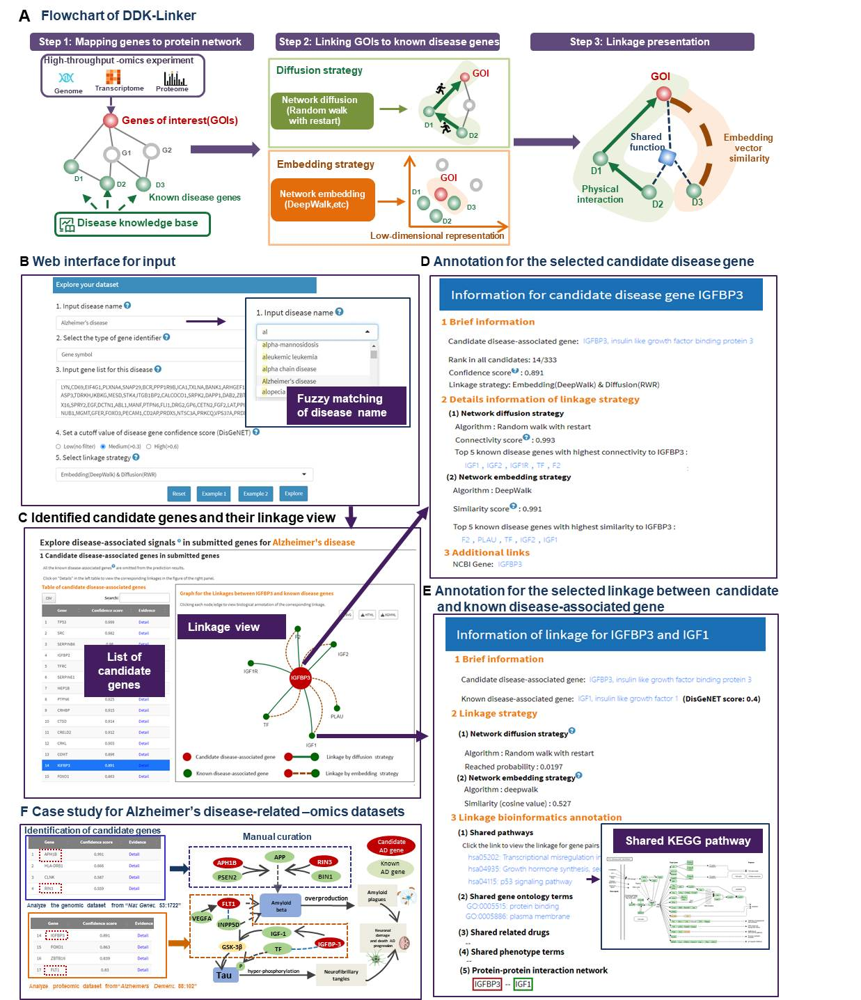
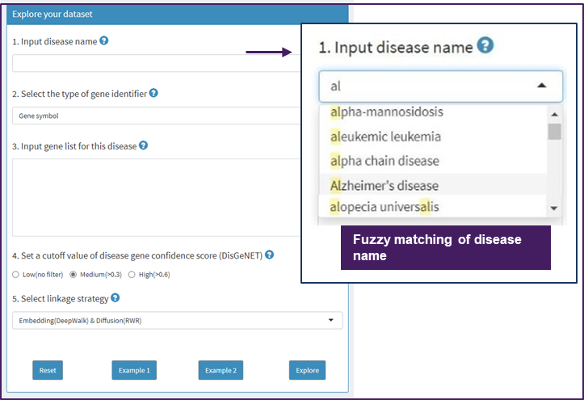
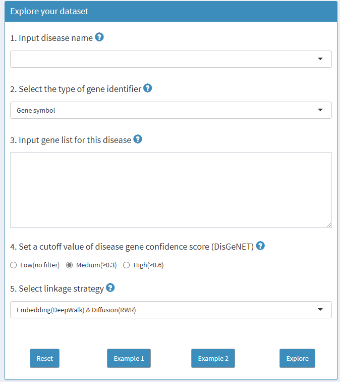
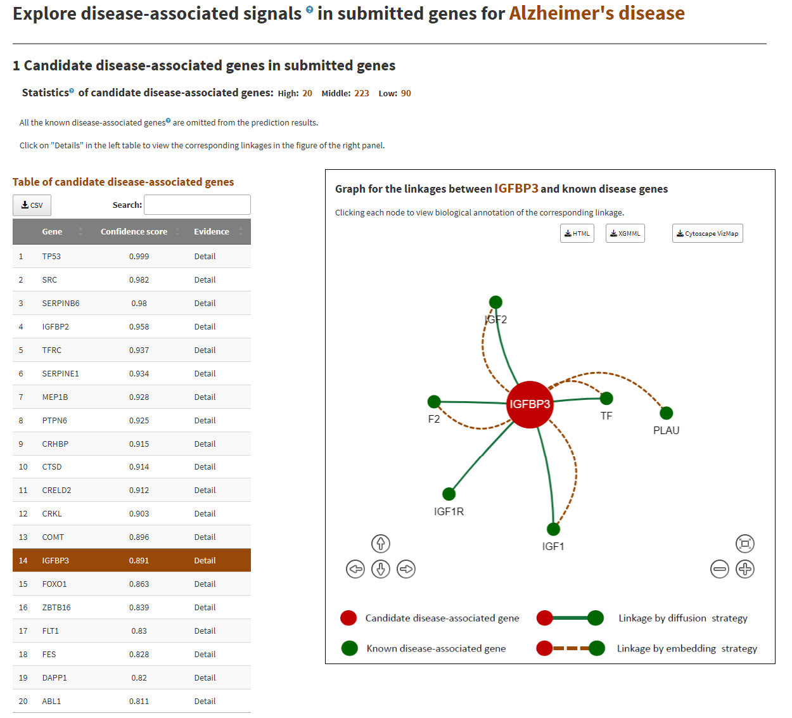
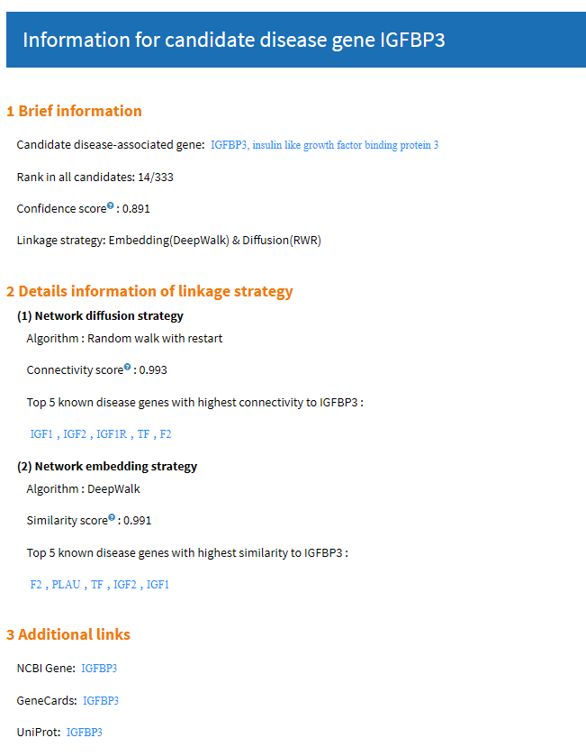
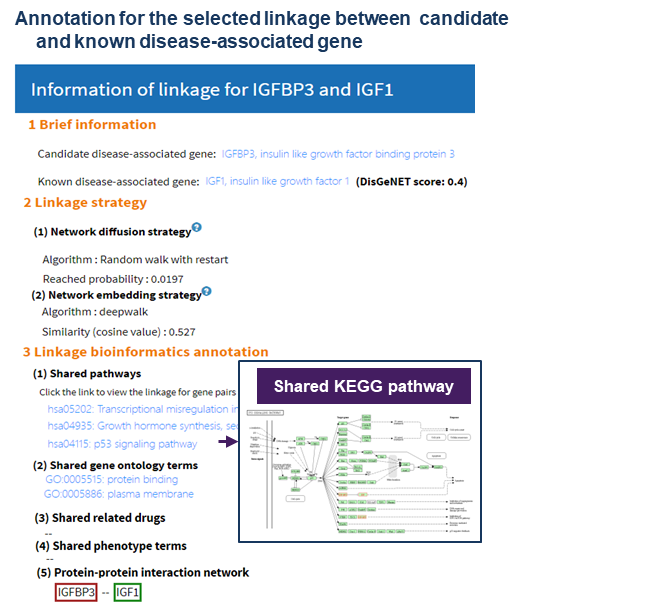
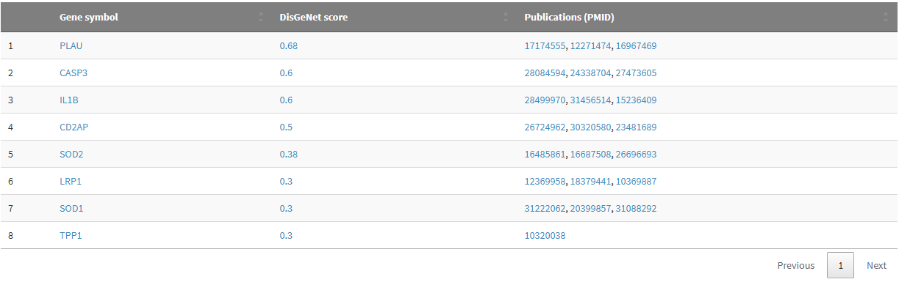

The documentation page provides various help, advice, and interpretation of the various inputs and outputs on the DDK-Linker webserver.
Disease signals refer to potential disease-related genes in high-throughput –omics dataset, or functional associations between disease signal genes and known disease genes, etc.
High-throughput -omics scanning approaches (such as genome-wide association studies and comparative proteomics) can generate quantitative genome-wide datasets under certain disease conditions. After statistical analyses (such as differential gene expression analysis), thousands/hundreds of genes of interest will be obtained. However, only some of these genes are crucial for us to understand the complex pathological processes. And these genes are defined as disease signal genes in the high-throughput datasets (Genome Biol 2022, 23: 61; Genome Med 2019, 11: 59; Bioinformatics 2015, 31: 2591).
Abbreviation for "Genes Of Interest". Genes of interest(GOIs) were often obtained from ‘-omics’ raw data after differential expression analysis, gene co-expression analysis, etc.
High-throughput -omics scanning approaches (such as proteomics) can generate quantitative genome-wide datasets under certain disease conditions, providing deep insight into complex pathological processes. However, routine bioinformatics analysis often stops after statistical analysis (such as differential gene expression analysis), and simple bioinformatics annotation (such as Gene Ontology analysis).
For narrowing down the genes of interest (GOIs) from high-throughput datasets to the most promising disease-associated genes, laborious and time-consuming manual literature review is often inevitable. With unprecedented growing wealth of disease -omics datasets and biological knowledge, there is an increasing need for a user-centered and context-specific web application to alleviate this bottleneck.
Here, to address this challenge, we provided DDK-Linker to facilitate the exploration of disease signals in high-throughput screening. By combining the high-confidence disease knowledge graph and two popular protein network analysis strategies, DDK-Linker presents candidate disease genes and their linkages to disease knowledge, which is promising to become a routine bioinformatics tool for the disease -omics experiments (Figure 1A).
Firstly, web interfaces were designed to accept the user-designated disease name and the related GOIs. User can customize parameters, such as disease gene confidence and network analysis algorithms (Figure 1B).
Then, network diffusion and network embedding algorithms were implemented to establish the linkages between GOIs and disease genes knowledge (Figure 1C).
Finally, detailed information pages were developed to illustrate linkages between the candidate disease genes and known disease genes, and also to show their abundant bioinformatics annotation, such as shared GO/KEGG terms (Figure 1D, E).
To test the efficacy of DDK-Linker, we analyzed two datasets from GWAS and proteomic datasets for Alzheimer's disease. Some candidate genes (such as FLT1) were identified and validated by latest literatures (Figure 1F).

Currently DDK-linker can analyze 2006 diseases.All these 2006 diseases included in DDK-Linker have at least one known disease-associated gene with DisGeNET score greater than 0.3.
| Disease categories | Disease number |
|---|---|
| Nervous system disease | 610 |
| Cancer | 243 |
| Musculoskeletal system disease | 170 |
| Cardiovascular system disease | 141 |
| Inherited metabolic disorder | 100 |
| Endocrine system disease | 70 |
| Gastrointestinal system disease | 70 |
| Integumentary system disease | 68 |
| Immune system disease | 49 |
| Hematopoietic system disease | 48 |
| Urinary system disease | 46 |
| Benign neoplasm | 39 |
| Respiratory system disease | 32 |
| Cognitive disorder | 28 |
| Bardet-Biedl syndrome | 20 |
| Developmental disorder of mental health | 19 |
| Usher syndrome | 18 |
| RASopathy | 16 |
| Reproductive system disease | 16 |
| Other disesaes | 203 |
| Total | 2006 |
DDK-Linker provides two categories of network-based approaches to identify disease-associated signals, including network diffusion strategy and network embedding strategy.
The diffusion methods employ random walk techniques for influence propagation in protein-protein interaction networks. In the current version of DDK-linker, RWR (Random walk with restart) algorithm was used, which is the state-of-the-art guilt-by-association approach. It explores the network vicinity of gene/protein seeds to study their functions, based on the premise that nodes related to similar functions tend to lie close to each other in the networks. Starting from known disease genes (seeds), they diffuse along the biological network through random walks. It is defined as follows:
pt+1 = (1 − r)Wpt + rp0 ,
where W is the column-wise normalized adjacency matrix of the network. In particular, pt is the probability vector of being at node i at time step t in its i-th entry and p0 is the initial probability vector holding the probabilities of being at known disease nodes (seeds). A proximity measure from every network node to the seed(s) can be calculated by RWR, then according to the proximity measure value, we can obtain a rank of candidate genes for the query disease. For a candidate gene with a rank n, the connectivity score was calculated as follows:
Connectivity score=1- n/N,
where n represents the rank of candidate gene, N represents the number of all candidate gene in network. A higher connectivity score means that the corresponding gene is more likely to relate to the disease.
This strategy identifies the potential disease-associated genes based on their embedding vectors’ similarity (cosine value) with those of known disease genes in protein-protein interaction network.
In the current version of DDK-Linker, three categories of embedding algorithms are used to create embedding vectors.
After creating low dimensional embedding vectors of genes, we calculate the similarities between vectors of known disease-associated genes and vectors of candidate genes. Mathematically, given the known disease-associated gene Vk and the candidate gene node Vg, we can measure the similarity by calculating the cosine of the angle between Vk and Vg
Similarity(Vg, Vk)= cos(Vg, Vk)
By calculating and sorting the similarities, we can obtain a rank of candidate genes for the query disease. For a candidate gene with a rank n, the similarity score was calculated as follows:
Similarity score=1- n/N
where n represents the rank of candidate gene, N represents the number of all candidate genes in network.
DDK-Liner combined the RWH (network diffusion strategy) and network embedding strategies based on a simple rule, that is, we take the minimum value of the ranks obtained by network diffusion strategy and network embedding strategy as the rank of candidate genes, which is proved to be effective by our experiment
We also provide a standard confidence score which indicates the strength of the association between the candidate gene and the disease. The confidence score was calculated from the candidate gene ranking generated by the linkage strategy selected by users. It ranges from 0 to 1. A higher confidence score means that the candidate gene is more likely to relate to the disease.
We obtained the disease-gene association from DisGeNET.DisGeNET(Nucleic Acids Res, 48:D845) is a high-confidence database of gene-disease associations. DisGeNET defines a gene-disease association score(DisGeNET score, range from 0 to 1) to evaluate the confidence of gene-disease associations.
In DDK-Linker, user can customize a cutoff value to select genes as known disease-associated genes which are used in the linkage strategies. See 2.4 Set a cut off value of disease gene confidence score
We select protein-protein interaction network HPRD as background network in DDK-Linker. HPRD (8827 genes, 34405 edges). This network is a manually curated network and widely used by the scientific community. The edges in the network are only from verified experimental results.
Users can designate one disease by providing its name in Disease Ontology.An embedded plug-in can help users select the disease name by approximate string matching. Users could input a disease name directly, and DDK-Linker can help users match the standard disease name by approximate string matching.

DDK-Linker supports the submission of two types of gene identifier types: NCBI Entrez Gene ID and Gene Symbol, which were widely used by the community.
Genes of interest were often obtained from ‘-omics’ raw data after differentially expression analysis, gene co-expression analysis, etc.[ Genome Biol. 2007;8(1):R3 ]. Users could directly paste the gene list (each gene in each line, or genes separated by comma). If you want to submit more than 2000 genes each time, please kindly e-mail us by lidong.bprc@foxmail.com before submission.
To meet different requirements of users, we provided the interface to permit user select different confidence cutoff value of disease genes. As Reactome defined, we provide three options:
Select an approach to link known disease gene. See Network-based approaches
Two example datasets are provided in the current version of DDK-Linker.
Datasets of "Example 1" is the genes list(patients with AD vs healthy controls) from genome(GWAS) experiment( Nat Genet.53(12):1722).
Datasets of "Example 2" load different expression genes list (patients with AD vs healthy controls) from proteomic experiment( Alzheimers Dement.88-102).

Click the "Explore" button on the home page to generate the result page.
After submitting, DDK-Linker performs the linkage analysis to discover disease-associated signals in submitted genes, presents the list of candidate disease-associated genes in submitted genes(left table) and illustrates their linkages with known disease genes (network view, right panel).
By clicking each node of network, users can view annotations of candidate gene and the corresponding linkages.
In DDK-Linker, disease-associated signals refer to potential disease-associated genes in the gene list from high-throughput screens, or functional associations between the gene list and known disease genes.
Here we present candidate disease-associated genes identified by DDK-Linker from submitted genes in left table. After clicking on an individual gene in left table, interactive network visualization will be displayed in the right panel. This network view will demonstrate the linkages between known disease genes (green nodes) and the candidate gene(red node).

Confidence Score: The confidence score indicates the strength of the association between the gene and the disease. It ranges from 0 to 1.
Known disease-associated genes:Genes with a DisGeNET confidence score greater than the cutoff value (set in the parameter setting section).
#High: The number of disease genes with correlation scores greater than 0.8. Correlation scores greater than 0.8 indicate corresponding genes are very highly related to user designated disease.
#Middle: The number of disease genes with confidence scores between 0.3 and 0.8. Correlation scores between 0.3 and 0.8 indicate genes which can be considered moderately related to diseases.
#Low: The number of disease genes with confidence scores less than 0.3. Correlation scores less than 0.3 indicate genes which have a low correlation.
Click on the central red node (candidate gene) to view a pop-up window for detailed information of the candidate gene.

Connectivity score: Connectivity score between a candidate gene and known disease-associated genes is caculated by RWH algorithm( Bioinformatics.35(3):4970). A higher connectivity score means that the corresponding gene is more likely to relate to the disease.
Similarty score:Similarty score reflects the similarity between a candidate gene and known disease-associated genes. See Network-based approaches.
Click on the green node (known disease gene) to view a pop-up window for detailed information of the linkage between candidate gene and known disease genes.

Linkage bioinformatics annotation: Here five types of bioinformatic annotation between the candidate gene and the known disease-associated gene are presented.
Here we present known disease-associated genes in submitted genes

known disease-associated genes: Genes with DisGeNET score greater than cutoff value set in the parameter setting section.